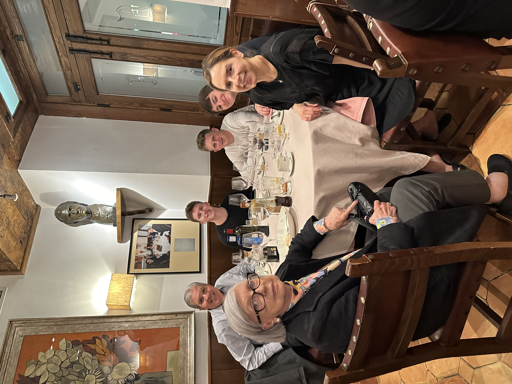
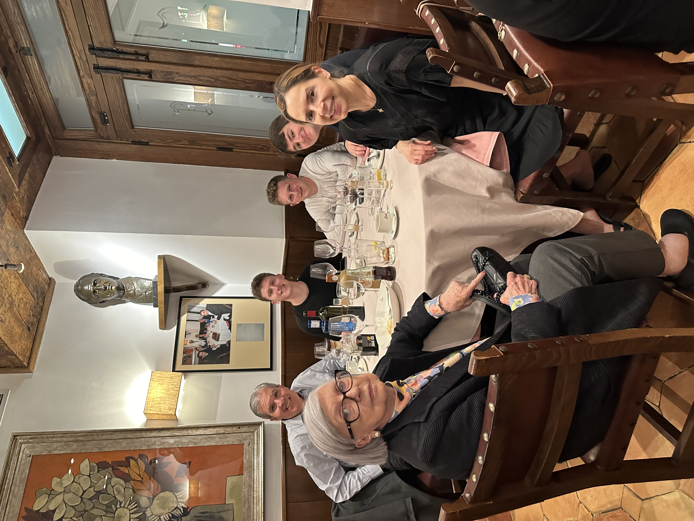
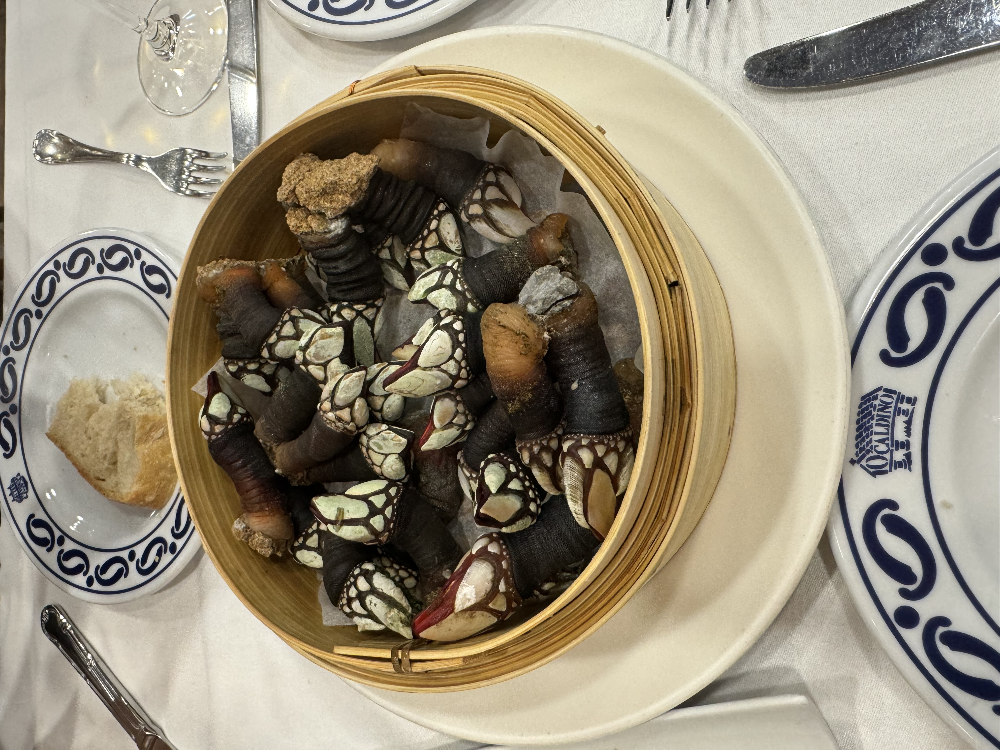
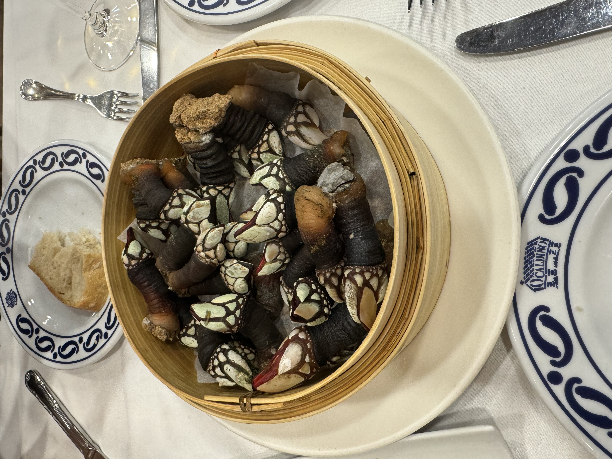

My Trip to Madrid
This is my digital travel log documenting my recent journey to Madrid, Spain. The trip was absolutely incredible and filled with memorable experiences. One of the highlights was surprising my friend for his birthday; he was also visiting Madrid. The surprise factor of the trip made the trip even more exciting and unforgettable. Additionally, this visit allowed me to explore Madrid as a prospective city where I might study abroad during the second semester of my junior year. I truly enjoyed the opportunity to get a sneak peek of its vibrant culture, architecture, and lifestyle, which leaves me eager to return.
The pictures below show my experiences from my trip! the first image is of Plaza Mayor is a symbol of the city and was a beautiful sight to see. The second image is from my friends birthday dinner. We went out to eat with his parents and grandmother! The third picture is from the lunch that we went to after surprising him. The fourth image is of Alcala Gate, another symbol of the city of Madrid. The fifth image is my favorite photo that I took while on the trip: A beautiful image of the Spain flag flowing in the wind. The sixth image is a picture of Madrid in the sunset. It is truly amazing how the sunset compliments the rich architecture of Madrid. The seventh image is of meat and cheese that I ate while in Madrid. It was such high quality and very good. The eighth image is of barnacles that I ate. At first glance they look super intimidating to eat, but they actually ended up tasting amazing. The last image is of shrimp that I had for lunch. Overall, I had an awesome time on the trip and can't wait to potentially go back!
Pictures From My Trip
 



 
